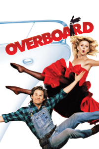
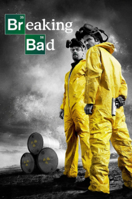
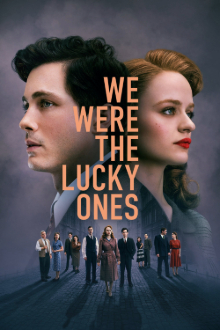
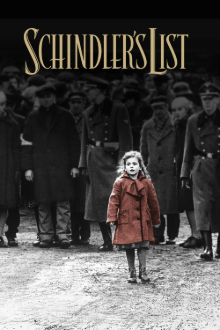
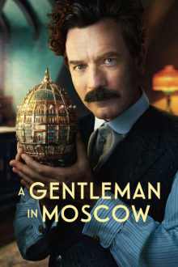

-
Um Salto para a Felicidade (Overboard, 1987)
Descrição
Joanna Stayton contrata o carpinteiro Dean Proffitt para montar um armário em seu iate e se nega a pagá-lo quanto o projeto fica pronto. Mas depois dela acidentalmente cair ao mar e perder a memória, Dean vê uma oportunidade de se vingar.
-
Breaking Bad (Série, 2008)
Descrição
Walter White, um professor de química do Novo Mexico, é diagnosticado com câncer e recebe um prognóstico de viver apenas mais dois anos. Isso lhe dá uma sensação de invencibilidade e um desejo de garantir o futuro financeiro de sua família a qualquer custo, entrando, assim, no perigoso mundo das drogas e do crime.
-
We Were the Lucky Ones (Série, 2024)
Descrição
A história real de uma família judia separada no início da Segunda Guerra Mundial, determinada a sobreviver – e a se reunir.
-
A Lista de Schindler (Schindler's List, 1993)
Descrição
O alemão Oskar Schindler viu na mão-de-obra judia uma solução barata e viável para lucrar com negócios durante a guerra. Com sua forte influência dentro do partido nazista, foi fácil conseguir as autorizações e abrir uma fábrica. O que poderia parecer uma atitude de um homem não muito bondoso, transformou-se em um dos maiores casos de amor à vida da História, pois este alemão abdicou de toda sua fortuna para salvar a vida de mais de mil judeus em plena luta contra o extermínio alemão.
-
A Gentleman in Moscow (Série, 2024)
Descrição
Depois da Revolução Russa, o Conde Alexander Rostov fica preso no hotel Metropol em Moscou, tornando-se um exilado em seu próprio país. Conforme o regime soviético sucumbe à tirania, o conde descobre o valor do amor, da coragem e da comunidade.